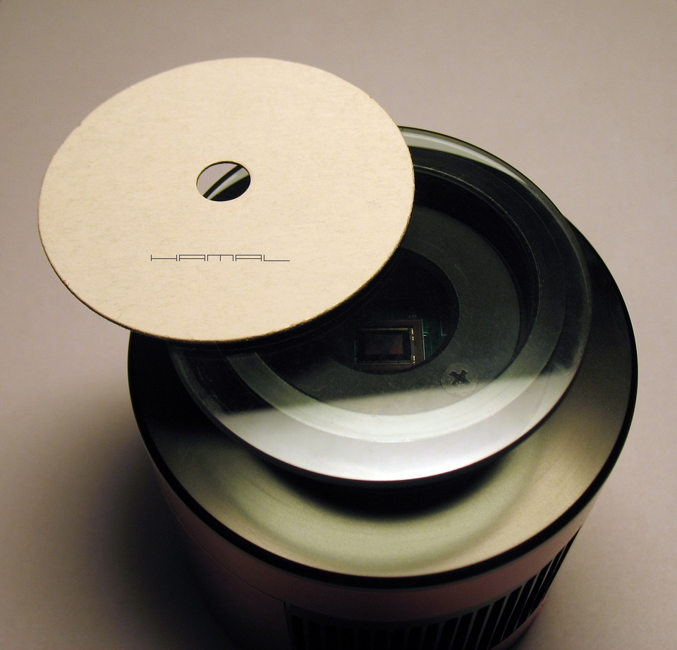
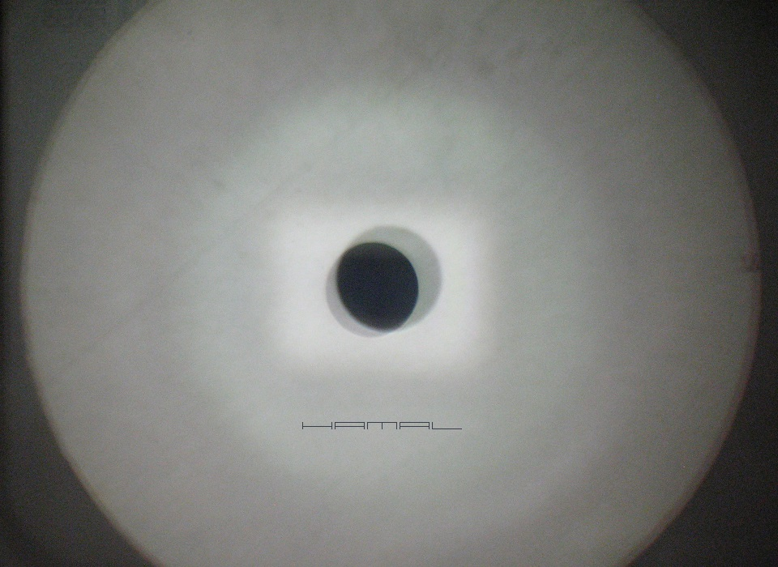
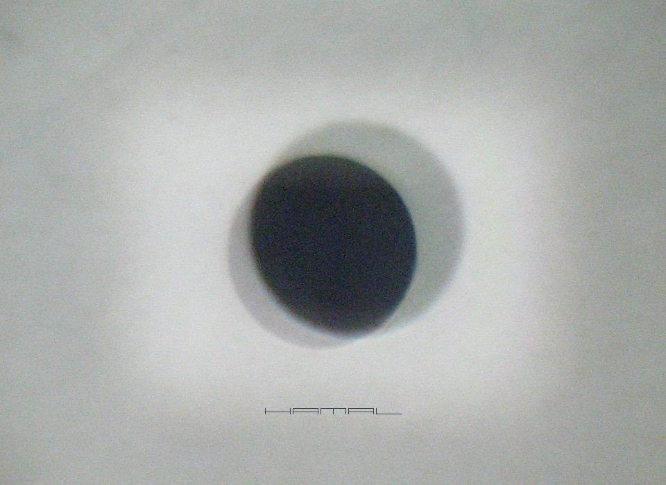
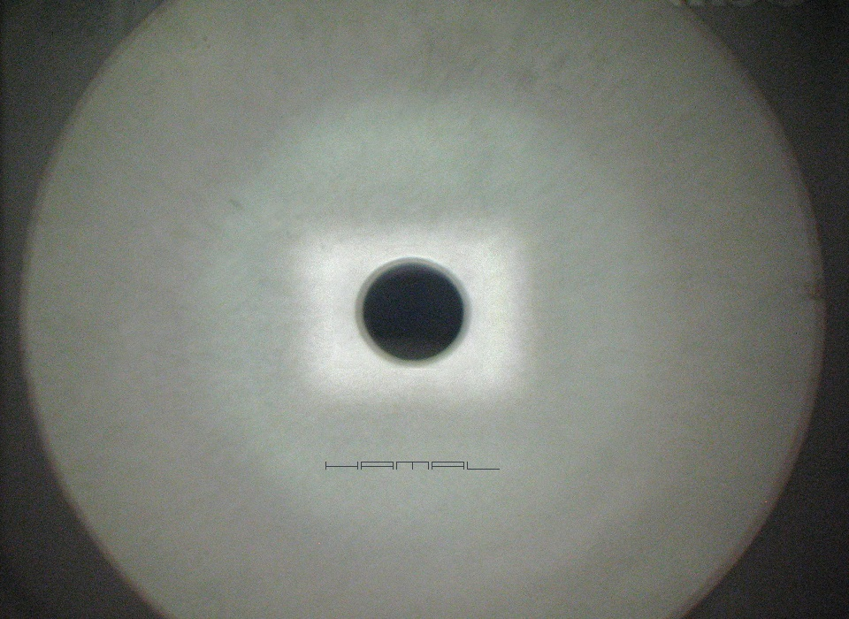
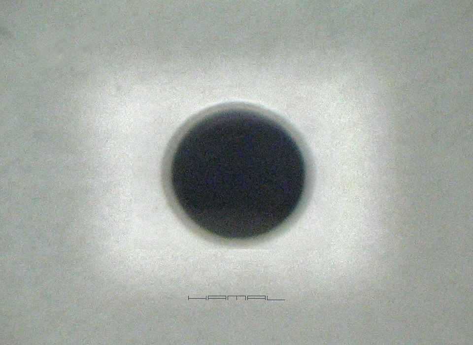

WZGLĘDEM OSI OPTYCZNEJ
.
Opis metody mojego pomysłu oraz sposobu jej zastosowania
|
Dnia 11-05-2020r w TYM temacie pierwszy raz opisałem moją nową metodę na poruszany tu problem. Choć nieoficjalnie wspominałem o niej już TUTAJ w 2016 roku. Do dnia opublikowania niniejszego, nie słyszałem, aby ktoś próbował działać w podobny sposób, mając powyższe na względzie, uważam się za ojca poniższej techniki :) WSTĘP . Producent krzywo zamontował matrycę w kamerce astrofotograficznej? Można to poprawić, wykorzystując opisaną tu technikę. Do chwili powstania w mojej głowie tej metody i tego opisu, nie istniała bezpośrednia amatorska metoda badania i ustawiania prostopadłości matrycy względem osi optycznej, a przynajmniej ja, zajmując się astronomią od ponad 20 lat i mając spore doświadczenie w tej dziedzinie, o takiej nie słyszałem, zresztą, ciągłe utyskiwania na forach astronomicznych na brak takiej metody były m.in. powodem mojego zainteresowania tym zagadnieniem. Istnieją uciążliwe metody takie jak CCD Inspector, próbne sesje astrofotograficzne, aby za pomocą TILT ADAPTER PLATE ADJUSTER skorygować wadę, ale wszystkie one nie likwidują przyczyny problemu, a jedynie, krzywo mocują kamerkę, aby krzywa w niej matryca, była prosta względem osi optycznej. Niestety, opisana tu metoda wymaga otwierania i zamykania komory matrycy, a to oznacza, że stracimy osuszenie komory i wpuścimy kurz. Po dokonaniu opisanej tu procedury, przy ostatecznym zamknięciu kamerki, będziemy zmuszeni te zagadnienia ogarnąć, z tym wszystkim należy się liczyć, o tym wszystkim należy pamiętać, ale jeśli koniecznie pragniecie krzywo zamontowaną matrycę ustawić należycie i uzyskać dzięki temu idealne zdjęcia, innego wyjścia nie macie. Jednak... zanim cokolwiek popsujecie... możecie za pomocą opisanego tu badania, jedynie sprawdzić, czy występuje u Was opisany tu problem, bo badanie ustawienia matrycy nie ingeruje w kamerkę w żaden sposób, do wykonania jest bardzo proste i nie wymaga skomplikowanych narzędzi. Ostatecznie możecie też wykorzystać opisywaną tu metodę w sposób, który pozwala uniknąć grzebania w kamerze, a mianowicie, nakręcić na nosek kamerki Tilt Adapter Plate Adjuster i jego płaszczyznę ustawić równolegle względem krzywej matrycy, w domu, przy biurku, oszczędzając w ten sposób trudu prób pod niebem, aby potem jedynie doprecyzować ustawienia podczas sesji astrofotograficznych. Po ustawieniu Tilt Adapter Plate Adjuster można mocować całą resztę sprzętu astrofotograficznego, nadal sprawdzając opisaną tu metodą, czy ostatnia płaszczyzna jest równoległa do sensora :) SPRZĘT . Na zestaw kolimacyjny składają się: - Szybka - może być jakiś filtr 2" np IRcut, lub szybka z okularów spawalniczych, ta nieprzyciemniana. Musi to być szybka w miarę równa optycznie. Krzywe szybki z zabawek, plexi itp nie nadają się. - Kartonik z otworkiem - kartonik z wyciętym 7mm-10mm otworkiem. Kartonik może być dowolnego kształtu, otworek może być dowolnego kształtu, ponieważ nam chodzi jedynie o wzajemne odbicia od szkiełek. Główną rolę gra otworek, który nie może być zbyt mały, gdyż ciężko będzie dokonywać oceny wzajemnych przesunięć odbić, nie powinien być też niepotrzebnie duży, bo to utrudni badanie. Optymalny, jak już pisałem, jest około 7mm-10mm. - Lampka - jej zadaniem będzie intensywne oświetlanie kartonika od dołu. Może to być zwykła lampka biurkowa 230V ulokowana jak na grafice poniżej. Zestaw kolimacyjny .  OPIS BADANIA . Chcemy skolimować matrycę kamerki. Ale względem czego ją skolimować? Nosek kamerki, a dokładniej jego część frontowa, w naturalny sposób stanowi dla nas idealny i naturalny punkt odniesienia dla całego układu optycznego astrofotograficznego. Względem tej powierzchni powinna być idealnie prostopadle usytuowana oś optyczna obrazowania, winny być idealnie równoległe wszystkie złączki, no i oczywiście, winna być idealnie równoległa matryca kamerki. Aby dokonać opisywanego tu badania, kamerkę stawiamy na blacie noskiem do góry, na nosku kamerki kładziemy naszą szybkę, do ręki bierzemy kartonik, i trzymając go nad kamerką, jednocześnie oświetlając go od dołu lampką, przez otworek w nim, z góry, obserwujemy kamerkę (patrz obrazek poniżej). Ważne jest, aby nasze oko było ustawione na środku otworka obserwacyjnego, unikamy patrzenia bokami, gdyż to fałszuje wyniki, a im większy otworek, tym bardziej. Nie będzie lekarstwem na ten problem mniejszy otworek, jak już pisałem wcześniej, gdyż utrudni on nam badanie wzajemnych przesunięć. Gdy matryca, a dokładniej okienko matrycy (nie komory matrycy), jest idealnie równoległa względem naszej szybki kolimacyjne, przy badaniu oba odbicia będą się na siebie symetrycznie nakładały, lecz gdy okienko matrycy jest względem szybki kolimacyjnej przechylone, obicia będą względem siebie przesunięte (patrz zdjęcia na końcu opisu). Mniejszy krążek to odbicie od matrycy, większy krążek, to odbicie od szybki kolimacyjnej. Aby zrozumieć, jak to działa, zrób próbę, która uzmysłowi Ci to zjawisko, tyle że zamiast krzywej matrycy względem szybki, wymusimy krzywą szybkę względem matrycy :) Patrząc przez kolimator i widząc odbicie w matrycy i w szybce kolimacyjnej, leżącą na nosku kamerki szybkę kolimacyjną przechylaj lekko na różne strony, zobaczysz wtedy, jak odbity w niej otworek kartonika wędruje na boki. Skoro tak, to analogicznie jest w drugą stronę, gdy dokonujemy badania, wtedy nasza szybka kolimacyjna na nosku jest punktem odniesienia i skoro odbicie w matrycy nie jest symetryczne względem niej, to oznacza, że matryca nie jest idealnie równoległa do szybki kolimacyjnej, więc i do frontu noska kamerki też. W powyżej opisany sposób dokonaliśmy oceny położenia matrycy i jeśli występują przesunięcia, to wiedzieć należy, że tam, gdzie wystaje krążek odbity od matrycy, tam matryca (i jej płytka, na której jest osadzona), są za wysoko i należy z tej strony obniżyć ich położenie. Badanie prostopadłości matrycy - posób wykonania . 
KOLIMACJA MATRYCY . W ramach przypomnienia, tam, gdzie wystaje krążek odbity od matrycy, tam matryca (i jej płytka, na której jest osadzona), są za wysoko i należy z tej strony obniżyć ich położenie. W przypadku stwierdzenia nieprawidłowości i podjęcia decyzji o działaniu, otwieramy komorę matrycy i z ustalonej strony, za pomocą śrub regulacyjnych (jeśli takie są), obniżamy odrobinę płytkę, zamykamy kamerkę i zestawem kolimacyjnym dokonujemy oceny zmian. Jeśli zachodzi taka potrzeba, znowu otwieramy kamerkę, znowu korygujemy odrobinę, zamykamy kamerkę i dokonujemy oceny zmian, itd, itd... Generalnie, staramy się nie luzować śrub regulacyjnych, tylko je dokręcać, z uwagi na fakt, iż chłód od ogniw peltiera do matrycy transportują umieszczone pod płytką matrycy specjalne pianki termoprzewodzące, a one od czasu wyprodukowania kamerki ugniotły się i luzowanie śrub spowoduje, że płytka z matrycą odklei się od nich i chłód z ogniw peltiera nie będzie transportowany. Natomiast dokręcanie śrub regulacyjnych, jedynie dociśnie nam płytkę mocniej do pianek, co może przynieść też pewne korzyści, bo jak już wspomniałem, pianki z czasem odgniotły się, mogą już tak ładnie nie przylegać do elektroniki, a dociśnięcie się do nich odrobinę, tylko się przysłuży jakości styku (u mnie po kolimacji kamera chłodzi się szybciej). Niemniej, gdy zajdzie potrzeba znacznego obniżenia jednego z rogów płytki matrycy, warto róg przeciwny jednak lekko unosić, dla przeciwwagi. Zobacz OPIS otwarcia ZWO ASI290MM-C, abyś mógł lepiej sobie uzmysłowić, z czym mamy do czynienia. Ważną rolę przy tym zabiegu gra wyobraźnia przestrzenna regulacji płytki z czterema punktami podparcia, jej reakcje na nasze poczynania, wpływ regulacji jednego rogu na inne, powstające w nich w tym czasie luzy i naprężenia, świadomość odkształceń, jakim poddajemy płytkę, wykonując dany zabieg. To wszystko trzeba mieć na względzie. Ideałem by były trzy punkty podparcia płytki, Atik poszedł kiedyś na łatwiznę i dał jedynie dwa poziomo, co wykluczało problem odkształceń, ale rodziło problem regulacji w osi pionowej. Niemniej, wszystko trzeba robić ostrożnie i z głową. . Po uzyskaniu satysfakcjonującego nas efektu możemy przystąpić do porządków w komorze kamerki, tj. czyszczenia matrycy, szykowania desykantów i ostatecznego skręcania urządzenia. Poniżej widzimy brak równoległości matrycy względem szybki kolimacyjnej, a co za tym idzie, brak prostopadłości matrycy względem osi optycznej. Przesunięte względem siebie odbicia otworu jednoznacznie wskazują, że matryca w kamerce zamontowana jest krzywo. Mniejszy krążek to odbicie od matrycy, większy krążek to odbicie od szybki kolimacyjnej.  zbliżenie .  Poniżej widzimy idealną równoległość matrycy względem szybki kolimacyjnej, a co za tym idzie, prostopadłość matrycy względem osi optycznej. Po kilku cyklach regulacji uzyskałem poniższy efekt końcowy, jak widać, odbicia otworu nachodzą na siebie symetrycznie, a to oznacza, że matryca jest idealnie równoległa do czoła noska kamerki i idealnie prostopadła względem osi optycznej. Mniejszy krążek to odbicie od matrycy, większy krążek to odbicie od szybki kolimacyjnej.  zbliżenie . 
MOGĄ CIĘ ZAINTERESOWAĆ RÓWNIEŻ


|